Ist die gesuchte Funktion in allen Termen nur linear enthalten, dann spricht man von einer linearen Integralgleichung. Die allgemeine Form einer linearen Integralgleichung lautet:
Die Funktion  ist zu bestimmen, die Funktion K(x,y) heißt Kern der Integralgleichung und f(x) ihre Störfunktion. Diese Funktionen können auch komplexe Werte annehmen. Verschwindet die Funktion f(x) in dem betrachteten Bereich, d.h., ist 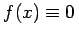, dann ist es eine homogene Integralgleichung, andernfalls eine inhomogene. Die Größe
ist zu bestimmen, die Funktion K(x,y) heißt Kern der Integralgleichung und f(x) ihre Störfunktion. Diese Funktionen können auch komplexe Werte annehmen. Verschwindet die Funktion f(x) in dem betrachteten Bereich, d.h., ist 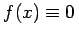, dann ist es eine homogene Integralgleichung, andernfalls eine inhomogene. Die Größe  ist ein im allgemeinen komplexwertiger Parameter.
ist ein im allgemeinen komplexwertiger Parameter.
Zwei Spezialfälle von (11.1) haben besondere Bedeutung. Sind die Integrationsgrenzen unabhängig von  , also konstante Größen, d.h. 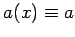 und 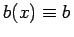, dann handelt es sich um eine FREDHOLMsche Integralgleichung:
, also konstante Größen, d.h. 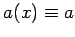 und 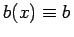, dann handelt es sich um eine FREDHOLMsche Integralgleichung:
Ist und 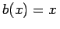, so spricht man von einer VOLTERRAschen Integralgleichung:
Kommt die zu ermittelnde Funktion  nur unter dem Integral vor, d.h. ist 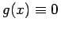, dann liegt eine Integralgleichung 1. Art vor (11.2a, 11.2c). Eine Integralgleichung 2. Art ist durch 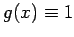 gekennzeichnet (11.2b,11.2d).
nur unter dem Integral vor, d.h. ist 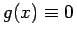, dann liegt eine Integralgleichung 1. Art vor (11.2a, 11.2c). Eine Integralgleichung 2. Art ist durch 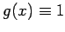 gekennzeichnet (11.2b,11.2d).
Hinweis: In diesem Kapitel werden nur Integralgleichungen 1. und 2. Art vom FREDHOLMschen und VOLTERRAschen Typ betrachtet sowie einige singuläre Intgralgleichungen.